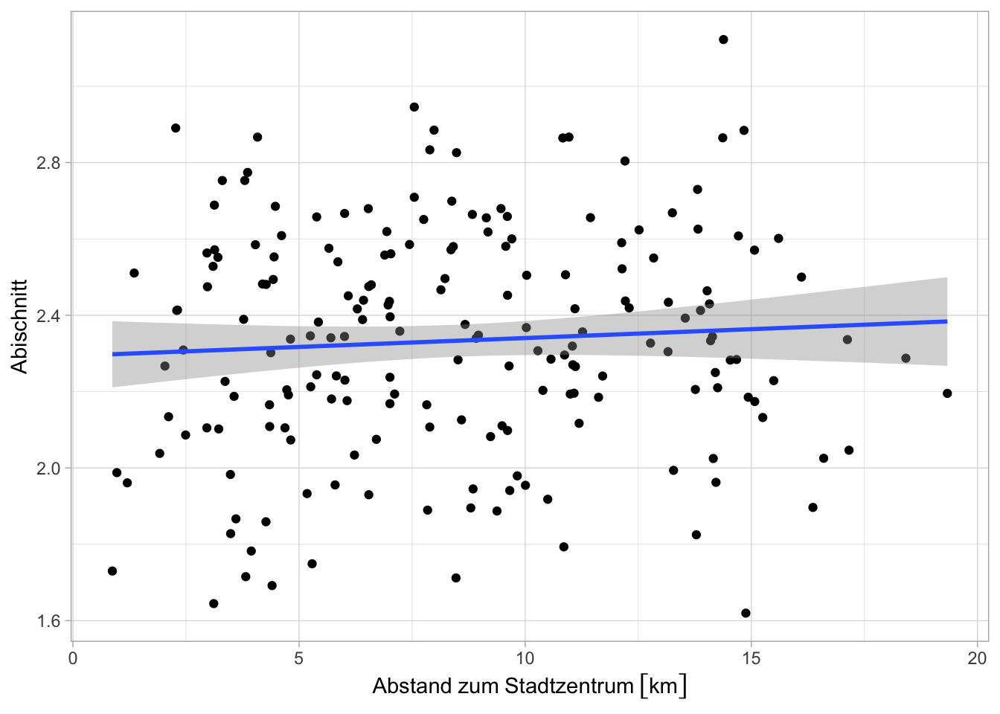
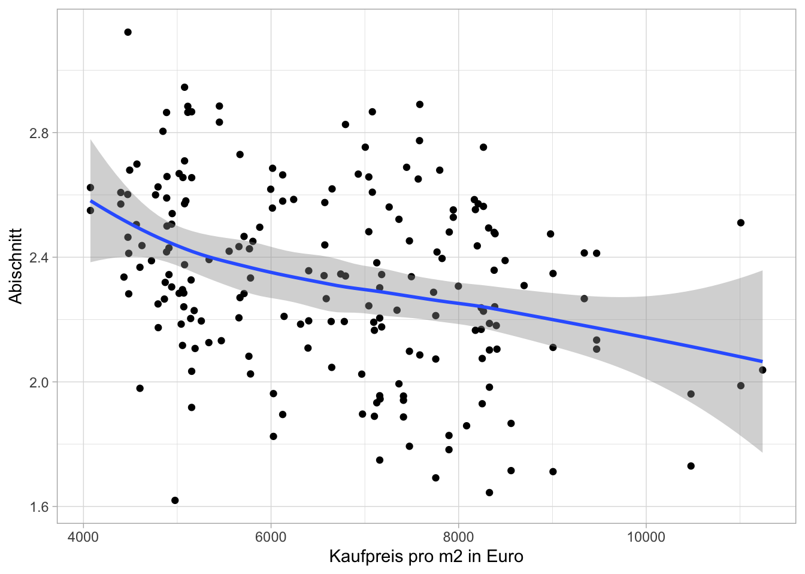

Die Schulform ist wichtig. Privatschulen und Gymnasien schneiden wie erwartet besser ab als Berufs- und Gemeinschaftsschulen. Allerdings ist die Streuung groß, besonders bei der Durchfallquote. Es gibt über alle Schulformen hinweg Schulen, in denen viel mehr Schüler:innen als normal die Abiprüfung nicht bestehen.
Auch der Kiez spielt eine Rolle. Einen pauschalen Gegensatz zwischen Innenstand und Außenbezirken gibt es nicht. Man sieht aber ein deutliches Gefälle zwischen den Ortsteilen und entlang der Grundstückspreise.
Verteilung
Der Abischnitt an den Berliner Schulen liegt im Mittel (Median) bei 2.34. Die Werte der einzelnen Schulen streuen entlang einer Normalverteilung um diesen Mittelwert.
Die mittlere Durchfallquote liegt bei 5,4 %. Die Verteilung ist right-skewed: An den meisten Schulen fallen wenige Schüler durch, an wenigen Schulen aber viele.
Zwischen den Schulen gibt es im Mittel grosse Unterschiede. An Privatschulen ist das Abi zum Beispiel um 0,5 besser als an den Gemeinschaftsschulen. Hier fällt in der Regel niemand durch, während an Gemeinschaftsschulen rund ein Zehntel des Jahrgangs die Prüfung gar nicht besteht:
Allgemein zeigt sich ein Gefälle zwischen den Privatschulen & Gymnasien auf der einen und den Berufs- und Gemeinschaftsschulen auf der anderen Seite. (Bei den wenigen Abendschulen ist das Bild komplizierter.)
Allerdings ist die Streuung groß. Es gibt z.B. auch einige Gemeinschaftsschulen, die ein deutlich besseres Durschschnittsabi als viele Privatschulen haben:
Das gilt nochmal stärker fuer die Durchfallquote. Spitzenwerte finden sich wie zu erwarten an Gemeinschaftsschulen (Otto-Hahn-Schule: 45,00 %, Ernst-Reuter-Schule:35,42 %). Es gibt aber auch einige Privatschulen (Evangelische Schule Spandau im Johannesstift: 19,05 %, Klax-Gemeinschaftsschule: 8,70 %) und Gymnasien (Sartre-Gymnasium: 19,35 %, Albert-Schweitzer-Gymnasium: 19,12 %), an denen sehr viele Schüler:innen das Abi nicht bestehen.
Bei den Schulen zeigt sich kein pauschaler Gegensatz zwischen Innenstadt und Außenbezirken. Der Abischnitt hängt nicht davon ab, wie weit eine Schule vom Stadtzentrum entfernt ist. Dasselbe gilt für die Durchfallquote (hier nicht berichtet).
Warning: The `scale_name` argument of `continuous_scale()` is deprecated as of ggplot2
3.5.0.
`geom_smooth()` using formula = 'y ~ x'

Auch wenn man grob zwischen den Schulen inner- und außerhalb des Rings unterscheidet, zeigt sich keine benachteiligte “Peripherie”. Wenn überhaupt, dann ist es andersrum: Die Schulen im Ring schneiden etwas schlechter ab.
Beim Bildungserfolg sieht man also eine residentielle Segregation. Die zeigt sich auch, wenn man zum Beispiel die Schulnoten zu den Grundstückspreisen in direkter Nachbarschaft in Beziehung setzt. Bessere Schule stehen eher in Postleitzahl-Gebieten, in denen Häuser und Wohnungen mehr kosten:
Code
schools %>%left_join(immo_prices, by =c("plz"="postcode_id")) %>%ggplot(aes(x = price_qm2023, y = abischnitt)) +geom_point() +geom_smooth() +labs(x ="Kaufpreis pro m2 in Euro",y ="Abischnitt")
`geom_smooth()` using method = 'loess' and formula = 'y ~ x'

Warum? Eigentlich besuchen Abiturient:innen nicht notwendigerweise eine Schule in ihrem Kiez. Eine Erklärung wäre, dass Schulen in besser betuchten Gegenden mehr Ressourcen haben (Geld vom Senat, Unterstützung aus Elternkreisen etc.). Eine andere Erklärung wäre, dass die Schüler eben doch verstärkt aus der (tendenziell wohlhabenden) Umgebung kommen.